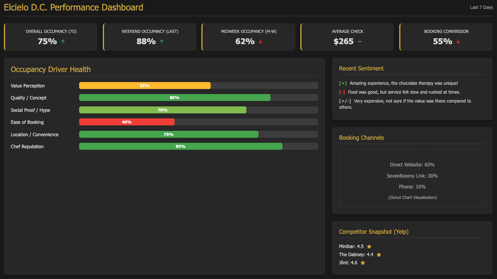

Análisis de Mercado El Cielo Washington D.C.
Optimización de Ocupación El Cielo D.C.
Fecha: 23 de Abril de 2025
Preparado por: Dario Rico
Resumen Ejecutivo
El Cielo D.C., galardonado con una estrella Michelin, ofrece una experiencia culinaria colombiana moderna y única. Si bien goza de reconocimiento y una fuerte presencia en redes sociales, existen oportunidades significativas para optimizar la ocupación, especialmente entre semana, en el competitivo mercado de alta cocina de Washington D.C. Este análisis identifica áreas clave para potenciar la visibilidad, refinar la propuesta de valor alineada con las expectativas del mercado local y mejorar continuamente la excepcional experiencia del comensal.
Las recomendaciones se centran en capitalizar las fortalezas existentes y abordar áreas de oportunidad mediante la mejora de la visibilidad en plataformas clave, la optimización del proceso de reserva actual a través de SevenRooms, la exploración de ofertas de menú adaptadas y el refuerzo de la narrativa única de El Cielo.
Hallazgos Clave:
- Los competidores de D.C. generalmente ostentan alta ocupación (80-100% fines de semana) y sentimiento positivo (Yelp 4.3–4.5)[2],[3], ayudados por reservas más fáciles (OpenTable/Resy) y sólidas bases de seguidores locales.
- Los comensales de D.C. prefieren los fines de semana[33], grupos pequeños (2-4)[35], son relativamente sensibles al precio en comparación con NYC[41], y valoran la conveniencia de la reserva[39],[40].
- Elcielo enfrenta una brecha de percepción-valor, con reseñas mixtas que citan ejecución, ritmo y valor en relación con su punto de precio[6],[7],[21].
- El proceso de reserva a través de SevenRooms, que implica pago manual en COP, crea fricción[39].
Recomendaciones:
- Mejorar la visibilidad y facilidad de reserva (ej., listar en OpenTable/Resy).
- Refinar la propuesta de valor (ej., considerar opciones entre semana más cortas/de menor precio).
- Optimizar la experiencia del cliente basada en comentarios (ritmo, consistencia).
- Aprovechar el marketing digital dirigido y colaboraciones con influencers.
- Implementar gestión basada en datos usando un 'Modelo de Impulsores de Ocupación' y seguimiento de KPIs.
Resultado Objetivo: Aumentar la ocupación a 90%+ los fines de semana y 70%+ entre semana, alineando la percepción del mercado con el estatus Michelin.
Análisis del Panorama Competitivo
El mercado de D.C. cuenta con múltiples restaurantes de alto rendimiento con estrellas Michelin y experienciales.
Resumen del Desempeño de Competidores
| Restaurante | Estrellas Michelin | Calificación Prom. Estimada (Yelp) | Precio Estimado (Degustación) | Ocupación Estimada Fin de Semana | Plataforma(s) de Reserva | Redes Sociales (Seguidores IG) |
|---|---|---|---|---|---|---|
| Minibar | 2★[8] | 4.5★[11] | ~$335+[9] | ~100%[8] | Tock/Propia[10] | Parte del imperio José Andrés |
| Jônt | 2★[12] | 4.5★[13] | ~$300+ (Est.) | ~100%[12] | Tock/Propia (Est.) | ~29k (con Bresca)[12] |
| The Dabney | 1★[15] | 4.3★[18] | ~$125 / A la carta[17] | Muy Alta[15] | OpenTable[15] | ~46k[16] |
| Rose's Luxury | Bib Gourmand[19] | 4.5★[20] | A la carta ($$-$$$) | ~100% (Sin reserva)[19] | Mayormente sin reserva[19] | ~49k (Est.)[30] |
| Imperfecto | 1★[21] | 3.8★[21] | ~$200[22] | Mixta/Moderada[21] | Resy/SevenRooms[21] | ~21k[22] |
| Cranes | 1★[23] | 4.3★[24] | ~$150 / Menú de Bar[25] | Fuerte[23] | OpenTable[23] | N/A (Perfil más bajo) |
| Bresca | 1★[26] | 4.2★[27] | ~$125 / A la carta[28] | Alta[26] | OpenTable[26] | ~10k (Parte de ~29k)[28] |
| Pineapple & Pearls | 1★[29] | ~4.4★ (Est.)[29] | ~$250 (Prepago)[29] | Alta (Fines de semana)[29] | Tock[29] | Moderado |
| Elcielo D.C. | 1★ | 4.1★[31] | ~$250+[14] | Menor que pares (Est.) | SevenRooms[39] | ~33k[30] |
Tabla 1: Comparación de competidores clave de alta cocina en D.C. Elcielo muestra una fuerte presencia en redes sociales pero se queda ligeramente atrás en calificaciones y utiliza una plataforma de reservas menos común. Las estimaciones de ocupación se basan en descripciones cualitativas en el texto fuente.
Posicionamiento de Mercado: Precio vs. Calificación
Gráfico 1: Mapa de posicionamiento de competidores de alta cocina de D.C. basado en el punto de precio estimado (menú de degustación o equivalente) y la calificación promedio de Yelp. Elcielo se posiciona en un punto de precio alto pero con una calificación ligeramente inferior en comparación con varios competidores directos. Los puntos de precio son estimaciones basadas en datos disponibles.
Comparación del Perfil Competitivo
Gráfico 2: Gráfico radar comparando Elcielo con competidores clave (Minibar, The Dabney, Imperfecto) en dimensiones críticas. Las puntuaciones (escala 1-5) son estimadas basadas en análisis de reseñas, facilidad de reserva, singularidad del concepto y notoriedad social. Elcielo puntúa bien en singularidad pero muestra posibles brechas en satisfacción/valor y accesibilidad de reserva.
Análisis del Comportamiento del Comensal de D.C.
Comprender las preferencias de los comensales locales es clave para optimizar la ocupación.
Preferencias de Días para Cenar
Gráfico 3: La alta cocina de D.C. muestra una fuerte preferencia por las reservas de fin de semana (jue-sáb) en comparación con los días de semana más lentos (lun-mié)[33]. El gráfico representa la demanda relativa basada en el análisis.
Factores Clave de Toma de Decisiones
Gráfico 4: Factores clasificados que influyen en las elecciones de alta cocina en D.C.[43]. La Cocina/Calidad y la Percepción de Valor son primordiales, seguidas por la Prueba Social (Michelin, hype).
Estacionalidad de las Cenas
Gráfico 5: Estacionalidad estimada de la alta cocina en D.C. basada en picos de turismo[36]. La primavera (Abr-Jun) y el otoño (Sep-Oct) suelen ver mayor demanda, mientras que el verano y el invierno experimentan caídas.
Patrones de Reserva y Tamaño del Grupo
| Métrica | Comportamiento Típico Alta Cocina D.C. | Implicación para Elcielo |
|---|---|---|
| Tiempo de Anticipación Reserva (Fin de Semana) | 1-4 semanas (Prom. ~14-21 días para top spots)[38] | Puede tener tiempos de anticipación más cortos; oportunidad de captar reservas de última hora si se reduce la fricción. |
| Tamaño Común del Grupo | 2-4 personas (Grupos grandes en declive)[35] | Enfocar marketing en parejas/grupos pequeños (noches de cita, celebraciones). |
| Preferencia Plataforma de Reserva | Alta preferencia por OpenTable/Resy por conveniencia[40] | Uso de SevenRooms + pago manual[39] representa una barrera; se recomienda explorar plataformas principales. |
Tabla 2: Comportamientos clave de reserva y tamaño de grupo en el mercado de alta cocina de D.C.
Sensibilidad al Precio por Ocasión (Conceptual)
Gráfico 6: Mapa de calor conceptual que ilustra la sensibilidad al precio del comensal de D.C. La sensibilidad es probablemente menor para ocasiones especiales importantes (aniversarios, hitos) reservadas los fines de semana, y mayor para cenas regulares entre semana o eventos menos significativos. El alto punto de precio de Elcielo lo posiciona principalmente para ocasiones de menor sensibilidad.
Análisis de la Percepción de Elcielo
Elcielo D.C. disfruta de una sólida reputación por su concepto innovador y experiencia sensorial (ej. 'chocoterapia'), respaldado por una estrella Michelin y una notable base de seguidores en Instagram (~33k). Sin embargo, el análisis de sentimiento de las reseñas (TripAdvisor 3.7/5, Yelp 4.1/5) sugiere oportunidades para alinear aún más las expectativas de los comensales con la oferta, particularmente en cuanto a la percepción del valor en relación al precio y la consistencia en la ejecución de la extensa experiencia de menú degustación.
Si bien la marca Elcielo es fuerte, existe la oportunidad de amplificar su alcance y accesibilidad en el ecosistema de reservas de D.C. Actualmente, las reservas se gestionan principalmente a través de SevenRooms. Aunque es una plataforma robusta, algunos comentarios sugieren posibles áreas para optimizar el flujo de reserva y el proceso de pago para asegurar una experiencia totalmente fluida desde el primer contacto.
Fortalezas Clave:
- Concepto único ("chocoterapia"[5], inmersivo)
- Espacio hermoso
- Algunos platos destacados
- Reconocimiento estrella Michelin
- Fuerte presencia en Instagram
Áreas de Oportunidad Identificadas:
- Percepción de Valor vs. Precio: Alinear las expectativas de los comensales con el punto de precio del menú degustación, considerando la sensibilidad al precio en el mercado de D.C.
- Consistencia en la Experiencia: Asegurar una ejecución y ritmo impecables a lo largo de la experiencia de 22 pasos, abordando comentarios sobre la duración o el servicio.
- Optimización del Proceso de Reserva (SevenRooms): Investigar y pulir cualquier punto de fricción reportado en el proceso de reserva y pago dentro de la plataforma SevenRooms.
- Visibilidad en Plataformas Complementarias: Evaluar la presencia en plataformas de alta demanda como OpenTable y Resy para complementar la visibilidad.
Análisis de Sentimiento de Reseñas
Temas Positivos
- Concepto único ("chocoterapia"[5], inmersivo)
- Espacio hermoso
- Algunos platos destacados
- Reconocimiento estrella Michelin
- Fuerte presencia en Instagram
Figura 1: Resumen de temas positivos y negativos comunes identificados en las reseñas de Elcielo D.C. en diversas plataformas.
Comparación de Calificaciones por Plataforma
Gráfico 7: Calificaciones promedio de Elcielo D.C. en plataformas principales comparadas con el rango típico de sus principales competidores (basado en datos de la Tabla 1). Las calificaciones de Elcielo (TripAdvisor 3.7[6], Yelp 4.1[31]) están ligeramente por debajo del rango 4.3-4.5 común entre pares de alta demanda.
Análisis de Brecha de Percepción
Posicionamiento Intencionado
Viaje culinario colombiano único, fantástico, multisensorial; una experiencia memorable de alta gama digna de su estrella Michelin.
Percepción Real del Mercado (Basada en Reseñas)
Concepto interesante y único, pero a veces ejecución inconsistente, ritmo potencialmente lento, y valor por dinero cuestionable en comparación con otras opciones de D.C. en un punto de precio similar.
Figura 2: Brecha entre el posicionamiento de marca intencionado de Elcielo y su realidad percibida basada en los comentarios de los comensales.
Palabras Clave Comunes en Reseñas
Gráfico 8: Nube de palabras generada a partir de palabras clave frecuentes en reseñas de Elcielo D.C. (positivas y negativas). Destacan "experiencia", "degustación", "chocolate", "único", pero también "precio", "lento", "valor" y "servicio".
Análisis de Factores de Ocupación
La ocupación de Elcielo D.C. está influenciada por una interacción compleja de factores internos y externos. Comprender estos impulsores es clave para desarrollar estrategias de optimización efectivas.
- Preferencia por Fines de Semana: El mercado de D.C. muestra una fuerte preferencia por cenar fuera los fines de semana (jueves a sábado), presentando una oportunidad para atraer comensales entre semana.
- Sensibilidad al Precio y Percepción de Valor: Los comensales de D.C. son relativamente sensibles al precio. Comunicar eficazmente el valor único de la experiencia Elcielo es fundamental.
- Conveniencia de la Reserva: Si bien SevenRooms es el sistema principal, asegurar un proceso sin fricciones y considerar la visibilidad en otras plataformas preferidas por los comensales de D.C. (como OpenTable/Resy) puede mejorar la conversión.
- Competencia Intensa: El mercado de alta cocina de D.C. es competitivo, con muchos establecimientos de alta calificación compitiendo por los mismos comensales.
- Experiencia del Comensal: Factores como el ritmo del servicio, la narrativa y la consistencia general impactan directamente en las reseñas y la repetición de visitas.
- Marketing y Visibilidad: La presencia activa en redes sociales es una fortaleza, pero se puede potenciar con marketing dirigido y colaboraciones estratégicas.
Modelo Conceptual de Impulsores de Ocupación
Propuesta: Para aumentar la ocupación (objetivo 90%+ fines de semana, 70%+ entre semana), las recomendaciones se centran en cinco pilares estratégicos:
- Potenciar la Visibilidad y Accesibilidad:
- Optimizar continuamente el flujo de reservas en SevenRooms, abordando cualquier fricción reportada (ej. proceso de pago).
- Evaluar estratégicamente la inclusión en plataformas de alta demanda como OpenTable y Resy para complementar la visibilidad.
- Mejorar el SEO local para búsquedas relevantes.
- Refinar y Comunicar la Propuesta de Valor:
- Considerar opciones de menú alternativas o más cortas para los días de semana, ofreciendo flexibilidad sin comprometer la esencia de Elcielo.
- Enfatizar activamente la historia colombiana única, los ingredientes y las técnicas diferenciadoras en marketing y durante la experiencia en el restaurante.
- Asegurar que el precio percibido se alinee con el valor entregado a través de una ejecución impecable.
- Optimizar la Experiencia del Comensal:
- Utilizar el feedback de las reseñas para refinar consistentemente el ritmo del servicio y la ejecución de cada plato.
- Empoderar al personal de sala para que actúen como embajadores de la marca, mejorando la narrativa y la conexión con los comensales.
- Amplificar el Marketing Digital Estratégico:
- Crear contenido atractivo que muestre la singularidad de la experiencia Elcielo (detrás de cámaras, historias de ingredientes).
- Colaborar con influencers gastronómicos locales y nacionales relevantes.
- Utilizar publicidad digital dirigida para alcanzar segmentos demográficos clave en momentos oportunos (ej. promoción entre semana).
- Implementar Gestión Basada en Datos:
- Establecer y monitorizar KPIs clave (tasa de ocupación por día/hora, tasa de conversión de reservas, puntuación de sentimiento, costo de adquisición de clientes).
- Utilizar el 'Modelo de Impulsores de Ocupación' propuesto para guiar decisiones y medir el impacto de las iniciativas.
Detalle de Recomendaciones Clave
1. Mejorar Visibilidad y Facilidad de Reserva
| Iniciativa | Métrica Base | Métrica Objetivo | Plazo | Complejidad | ROI / Impacto Esperado |
|---|---|---|---|---|---|
| Listar en OpenTable/Resy | 0 referidos | 15%+ reservas vía nuevos canales | 4-6 semanas | Media (Integración, tarifas) | Mayor volumen de reservas, menor fricción |
| Simplificar Proceso de Pago | Pago manual COP[39] | Pago integrado USD | 2-4 semanas | Baja-Media (Config. plataforma) | Menor abandono de reservas |
2. Refinar Propuesta de Valor
| Iniciativa | Métrica Base | Métrica Objetivo | Plazo | Complejidad | ROI / Impacto Esperado |
|---|---|---|---|---|---|
| Pilotear Menú Entre Semana Más Corto/Económico | ~<70% ocupación entre semana | Aumentar ocupación entre semana en 15-20% | 8-12 semanas (Piloto) | Media-Alta (Desarrollo menú, ops) | Atraer nuevo segmento, impulsar ingresos |
| Amplificar Narrativa Colombiana | Menciones inconsistentes en reseñas | Aumentar menciones positivas de historia única | Continuo | Baja (Capacitación personal, marketing) | Diferenciación mejorada, conexión con cliente |
3. Optimizar Experiencia del Cliente
| Iniciativa | Métrica Base | Métrica Objetivo | Plazo | Complejidad | ROI / Impacto Esperado |
|---|---|---|---|---|---|
| Abordar Comentarios sobre Ritmo y Consistencia | Reseñas mixtas (3.7 TA[6], 4.1 Yelp[31]) | Mejorar calificación prom. a 4.3+ | Continuo | Media (Capacitación cocina/servicio) | Mayor satisfacción, visitas repetidas, mejores reseñas |
| Mejorar Narrativa del Servicio | Menciones variables | Comentarios positivos consistentes sobre interacción del servicio | 4-8 semanas (Capacitación) | Media (Capacitación) | Valor percibido mejorado, experiencia memorable |
Cronograma de Implementación
Maqueta del Panel de Impulsores de Ocupación
Concepto del Panel
[Maqueta Visual Placeholder - Describir métricas clave rastreadas: Ocupación Semanal/Mensual (Entre Semana/Fin de Semana), % Fuente de Reserva, Tasa de Conversión (Visitas Web a Reservas), Tendencia Calificación Promedio, Puntuación Sentimiento Reseñas, ROI Campaña Marketing, Rastreador Precios Competencia.]
Figura 3: Maqueta conceptual de un Panel de Impulsores de Ocupación para rastrear indicadores clave de rendimiento.
Proyección de ROI
Gráfico 14: Impacto proyectado de las recomendaciones en las tasas de ocupación y mejora estimada de ingresos durante 12 meses, asumiendo una implementación exitosa.
Referencias
- The DMV Daily. Michelin-Starred Restaurants Elevate Washington D.C.'s Culinary Scene. Link
- Stacker. (Fecha Accedida). Highest-rated Fine Dining Restaurants in Washington, D.C. by Diners. Link (Referencia de calificación para múltiples restaurantes)
- Stacker. (Fecha Accedida). Highest-rated Fine Dining Restaurants in Washington, D.C. by Diners. Link (Referencia calificación Jônt)
- Stacker. (Fecha Accedida). Highest-rated Fine Dining Restaurants in Washington, D.C. by Diners. Link (Referencia calificación Rooster & Owl)
- Washingtonian. (2020, September 17). Wash Your Hands With Chocolate Before El Cielo’s 25-Dish Modernist Colombian Tasting. Link
- Tripadvisor. (Fecha Accedida). EL CIELO RESTAURANT WASHINGTON DC Reviews. Link
- Tripadvisor Review. (Fecha Accedida). Extremely disappointed. Link
- Minibar by José Andrés. (Fecha Accedida). FAQ Minibar. Link (Info ocupación/reserva)
- Eater DC. (2016, March 8). Dinner for Two at Minibar Can Now Total More Than $1,000. Link
- Minibar by José Andrés. (Fecha Accedida). FAQ Minibar. Link (Info plataforma reserva)
- Stacker. (Fecha Accedida). Highest-rated Fine Dining Restaurants in Washington, D.C. by Diners. Link (Referencia calificación Minibar)
- Instagram. (Fecha Accedida). JÔNT (@jont_dc). Link (Seguidores, info concepto)
- Stacker. (Fecha Accedida). Highest-rated Fine Dining Restaurants in Washington, D.C. by Diners. Link (Referencia calificación Jônt)
- Derivado del texto: ~22 platos, ~$250+. Fuente original probablemente web restaurante o reseña mencionando precio/número platos.
- OpenTable Blog. (Fecha Accedida). MICHELIN Star restaurant in DC to book ASAP. Link (Info reserva/popularidad Dabney)
- Instagram. (Fecha Accedida). The Dabney (@thedabneydc). Link (Seguidores, Info premio)
- Web/Menú The Dabney (Implícito). Referencia a Precio fijo ~$125 o platos a la carta.
- Giftly. (Fecha Accedida). The Dabney Gift Card. Link (Calificación Yelp/número reseñas)
- The Washington Post. (2015, August 1). Swelter for hours in line to eat at the acclaimed Rose’s Luxury?. Link (Cultura de fila, demanda)
- Giftly. (Fecha Accedida). Rose's Luxury Gift Card. Link (Calificación Yelp/número reseñas)
- Giftly. (Fecha Accedida). Imperfecto Gift Card. Link (Calificación Yelp, info reserva inferida) & Seven Reasons Group Link (Contexto reseña)
- Instagram. (Fecha Accedida). IMPERFECTO (@imperfectodc). Link (Seguidores) & Precio inferido del texto.
- Derivado del texto: Ocupación Cranes, reserva vía OpenTable.
- Stacker. (Fecha Accedida). Highest-rated Fine Dining Restaurants in Washington, D.C. by Diners. Link (Calificación Cranes) & Tripadvisor Review Link (Sentimiento)
- Derivado del texto: Punto de precio Cranes.
- Derivado del texto: Ocupación Bresca, reserva vía OpenTable.
- Giftly. (Fecha Accedida). Bresca Gift Card. Link (Calificación Yelp)
- Derivado del texto: Precio/menú Bresca, seguidores redes sociales.
- The Apres Hours Blog. (Fecha Accedida). Good Time Guarantee - Pineapple & Pearls. Link (Cambio concepto) & Reddit r/finedining Link (Sentimiento) & Guía Michelin Link (Estrella recuperada) & Reserva/Precio derivado del texto.
- Instagram. (Fecha Accedida). Perfil Instagram Elcielo D.C. & perfiles competidores (@thedabneydc, @rosesluxury).
- Giftly. (Fecha Accedida). El Cielo Gift Card. Link (Calificación Yelp)
- Tripadvisor Review. (Fecha Accedida). Slow - Review of The Dabney. Link (Ejemplo crítica servicio Dabney)
- The Washington Post. (2024, May 14). The new dining reality: Smaller groups and shorter weeks. Link (Tendencia entre semana)
- Axios. (2024, August 15). Weekend, not weekday, lunch is on the rise in DC. Link
- The Washington Post. (2024, May 14). The new dining reality: Smaller groups and shorter weeks. Link (Tendencia tamaño grupo)
- Destination DC. (Fecha Accedida). Research. Link (Estacionalidad turismo)
- Giftly/Texto Derivado. Opciones menú Bresca.
- Derivado del texto: Tiempos generales anticipación reserva alta cocina (datos OpenTable implícitos).
- Reddit r/finedining. (Fecha Accedida). Reservations at El Cielo. Link (Informe fricción reserva)
- Reddit r/restaurateur. (Fecha Accedida). Tock vs. Resy vs. OpenTable. Link (Discusión preferencia plataforma)
- Reddit r/washingtondc. (Fecha Accedida). DC Restaurant Prices More than NYC. Link (Discusión sensibilidad precio)
- TikTok @highspeeddining. (Fecha Accedida). Elcielo Restaurant 22 Course Review. Link (Crítica valor)
- Derivado del análisis: Ranking de factores de decisión basado en síntesis del texto proporcionado.